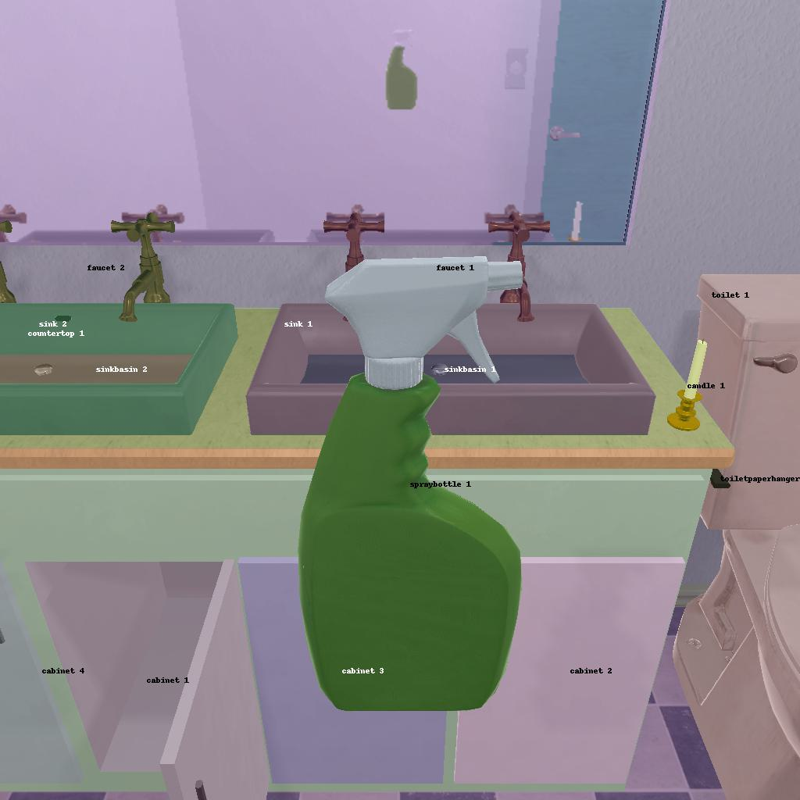

---------------------------------------------------------task: 9---------------------------------------------------------
--------------------------------------------------------------------------------------------------------------------------------------------------------------------
--------------------------------------------------------------------------------------------------------------------------------------------------------------------
Step:--------------------------------------------------------------------------17-------------------------------------------------------------------------------
----------------------------------------
VLM Prompt:
Image1:
Image2:
Image3:
**Instruction**
1. Analyze the provided image to identify all visible household objects, focusing on those relevant to the task description "put some soapbottle on toilet."
2. Use the analysis of the image and the task hint "The agent must find an object of the desired type, pick it up, find the correct location to place it, and put it down there." to answer the question: what is the most reasonable action in the choices for the task description "put some soapbottle on toilet"?
4. Decide and write the answer using the template: The answer is: (i): , where i is the real number. If there is no desired object in the image, search every place based on **Initial Observation** to find the object. And if no one is exactly correct, choose a similar answer.
**Initial Observation**
You are in the middle of a room. Looking quickly around you, you can see bathtub (1), bathtubbasin (1), toilet (1), cabinet (1-4), sink (1-2), countertop (1), sinkbasin (1-2), toiletpaperhanger (1), towelholder (1), garbagecan (1), handtowelholder (1)
**Answer Choices**
(1): go to bathtub 1
(2): go to bathtubbasin 1
(3): go to cabinet 1
(4): go to cabinet 2
(5): go to cabinet 3
(6): go to sink 1
(7): go to sink 2
(8): go to countertop 1
(9): go to sinkbasin 1
(10): go to sinkbasin 2
(11): go to toiletpaperhanger 1
(12): go to towelholder 1
(13): go to garbagecan 1
(14): go to handtowelholder 1
(15): open cabinet 4
(16): close cabinet 4
(17): put spraybottle 1 in/on cabinet 4
(18): examine spraybottle 1
(19): examine cabinet 4
**Answer**
Let's think step by step by following the instructions.
----------------------------------------
----------------------------------------
Original Response:
Firstly, we need to identify all visible household objects relevant to the task description "put some soapbottle on toilet." From the initial observation, we can see that there is a toilet and multiple cabinets in the room.
The task requires the agent to find an object of the desired type, which is a soapbottle in this case. However, upon examining the images, there is no soapbottle visible. Instead, we see a spraybottle. Since the task specifies "soapbottle" and not just any bottle, we can assume that the spraybottle is not the desired object for the task.
Since the desired object (soapbottle) is not visible in the images provided, we should search every place based on the Initial Observation to find the object. The most logical places to find a soapbottle would be in the cabinets as they are common storage areas for such items.
Considering all the points above, the most reasonable action to find the soapbottle would be to search the cabinets. Out of the answer choices given, the actions that involve searching the cabinets are (3), (4), (5), and (15). Since (15) specifies "open cabinet 4," it suggests an active search inside a cabinet, which aligns with our goal to find the soapbottle.
The answer is: (15): open cabinet 4.
----------------------------------------
----------------------------------------
>>> Refine Original VLM Response and Get Pure Action: open cabinet 4
----------------------------------------
-----------------------------------------------------------------
Running time: 11.21228551864624 seconds
Total Money: 5.52852
-----------------------------------------------------------------
-----------------------------------------------------------------
Text Observation:You open the cabinet 4. The cabinet 4 is open. In it, you see a faucet 2, a faucet 1, and a candle 1.
-----------------------------------------------------------------
UNSUCCEED